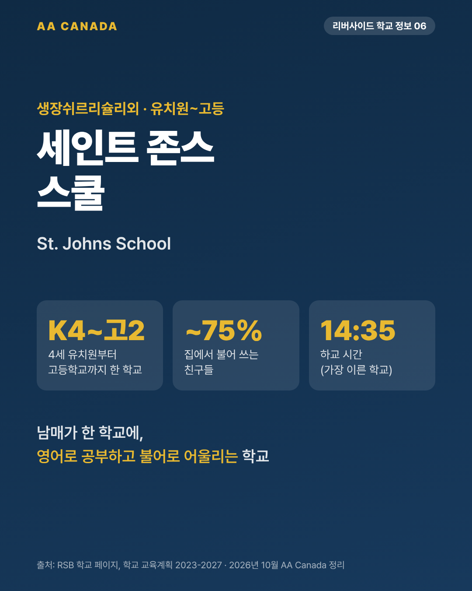

세인트 존스 스쿨 (St. Johns School)

기준일 2026-10-21 · AA Canada 정리
교육청 공통 정보는 리버사이드 교육청 공통 안내를 보세요.
한 줄 요약: 4세 유치원부터 고등학교까지 한 학교. 학생 약 75%가 집에서 불어를 쓰는, 영어와 불어가 자연스럽게 섞인 학교입니다.
한눈에 보기
| 항목 |
내용 |
| 주소 |
380 rue Saint-Michel, Saint-Jean-sur-Richelieu, QC J3B 1T4 |
| 연락처 |
450-550-2501 (수신자 부담 1-877-550-2501) · st-johnsemail@rsb.qc.ca |
| 학년 |
K4(4세 유치원) ~ Secondary 5 |
| 학생 수 |
약 820~900명 (2023-27 교육계획: 초등 약 523명, 고등 약 302명) |
| 수업 시간 |
초등 7:55~14:35 / 고등 8:05~14:35 |
| 시간표 |
9일 주기 |
| 교장 |
Jean-Simon Poirier |
| 지역 |
이 지역(Saint-Jean-sur-Richelieu, Lacolle, Napierville, Mont-Saint-Grégoire 등)의 유일한 영어학교 |
| 스포츠팀 |
St. John's Knights (1991년부터) |
리버사이드 고등학교 중 가장 일찍 시작하고 가장 일찍(14:35) 끝납니다.
프로그램
초등부
- 유치원과 1~2학년(Cycle 1)은 영어로 수업합니다.
- 3학년부터 초등 전원이 이중언어(Bilingual) 과정입니다. 2019-22년에는 이중언어반이 학년당 한 반이었는데 2023-27 계획에서 전원으로 확대됐습니다.
- K~6학년 데이케어 운영.
고등부
- 영어 일반과정 + 불어 3단계(기본, 심화, 모국어 수준)
- Secondary 1: 영어 주요 과목 + 9일 주기 중 불어 6교시
- Secondary 3: 퀘벡·캐나다 역사, 진로 프로젝트
- Secondary 4: 일반 / 과학 트랙 (조건 있음)
- Secondary 5: CST 수학 또는 과학 선택
시설과 학교생활
- 같은 건물에 교육청 성인교육·직업훈련 센터(ACCESS)와 커뮤니티 러닝 센터(CLC)가 있습니다.
- 새 야외 교실
- 농구 대회 우승(Bishop's College School 대회) 등 운동부 활동
학업 성적 지표
- Fraser Institute 2025 퀘벡 고교 평가: 10점 만점에 약 5.0점 (순위 약 330위권).
AA Canada 코멘트: 이런 가족에게 추천
- 형제·남매가 함께 오는 가족. 초등생과 중고생이 한 학교에 다닐 수 있어 등하교와 학교 소통이 한 번에 됩니다.
- 영어와 불어를 둘 다 제대로 배우고 싶은 가족. 친구 대부분이 집에서 불어를 써서, 영어로 공부하면서 불어를 생활 속에서 익힙니다. AA Canada가 안내하는 "불어 활용 영주권 루트"를 준비하는 부모 동반 가족과 잘 맞습니다.
- 몬트리올 남쪽 사우스쇼어 중심(브로사드·롱괴이)에서는 떨어진 리슐리외 강변 도시입니다. 도시 생활보다 조용한 소도시를 원하는 가족에게 맞습니다.
출처
- RSB 학교 페이지: https://rsb.qc.ca/school/stjohns
- 2023-2027 교육계획: https://www.rsb.qc.ca/wp-content/uploads/2024/11/Educational-Project_STJohnsSchool_2023-2027.pdf
- 2019-22 교육계획: https://www.rsb.qc.ca/wp-content/uploads/2020/12/St.-Johns-Educational-Project-PDF-FInal.pdf
- Secondary 1·3·4·5 과정 안내 PDF (rsb.qc.ca, 2024-10)
- 학군 지도: https://www.rsb.qc.ca/wp-content/uploads/2021/10/St.-Johns-Territory.pdf
- 위키백과: https://en.wikipedia.org/wiki/St.John%27s_School(Quebec)
- Fraser Institute 2025 보고서